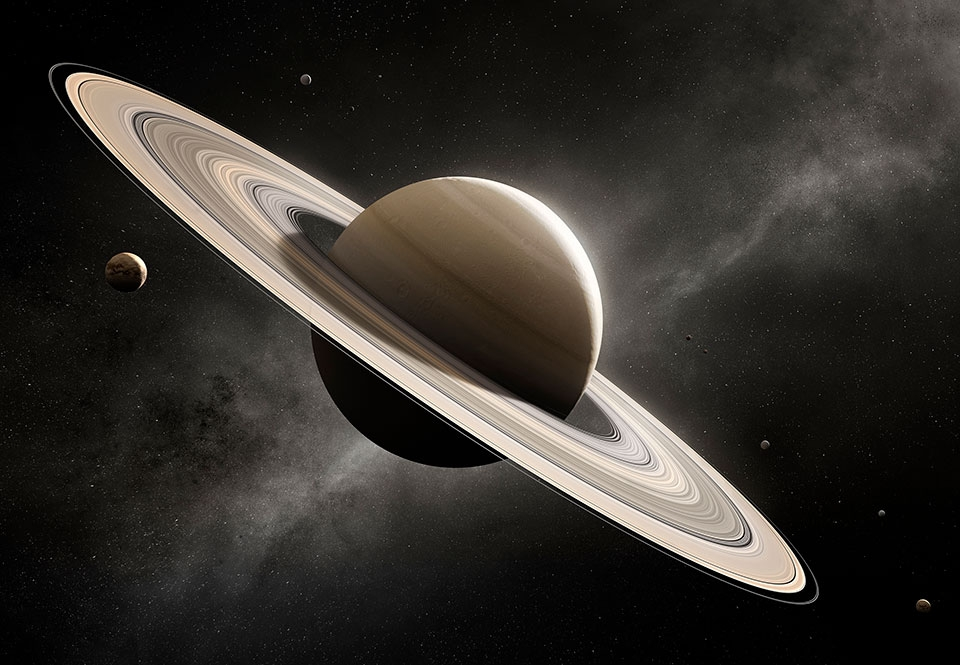

Hurtig Fakta om Saturn
Placering: Nummer 6 fra Solen (ca. 9,5 AE eller 1,4 milliarder km væk).
Type: Gasplanet (består primært af brint og helium).
Størrelse: Ækvatordiameter på ca. 120.536 km (omkring 9 gange større end Jorden).
Massefylde: Laveste i Solsystemet (0,70 g/cm³, hvilket er mindre end vand).
Døgn og år: Et døgn varer ca. 10 timer og 33 minutter, mens et år om Solen tager ca. 29,5 jordår.
Ringe: Berømt for sit store ringsystem lavet af is og stenstumper.
Måner: Har over 146 kendte måner, hvor Titan og Enceladus er de mest kendte.
